1. Wastepaper basket "in attesa" 
1971 Enzo Mari Danese, Italy polypropylene
A cylinder is the most normal form that a wastepaper basket takes. With a slight tilt in the direction in which people toss their garbage, this wastepaper basket has become a new normal. The lip of the wastepaper basket being slightly thicker makes it easier to carry. Generally with molded plastic goods, attempts are made to keep the thickness of the plastic as uniform as possible to create a smooth surface. If there is a thicker section in a uniform material, a dent may appear as the material hardens, since the temperature doesn't drop uniformly through the material. This is called a "dimple defect," and it is usual for molded goods with many of these dimples to be considered poor quality. But with this wastepaper basket, it has been possible to achieve such a dimple the entire way around the lip of the wastepaper basket mouth, so that it is thicker than the rest of the body. It is not easy to revamp something normal, making it easier to use and thus creating a new normal. This wastepaper basket has succeeded in generating a normal that surpasses normal by using a technical factor, generally considered to be negative, to positive effect.
2. Small chair 
2005 Naoto Fukasawa Maruni Wood Industry, Japan beech
A chair with a squarish seat and cylindrical legs was a common theme in the 1970s, but always done in an uncompromisingly modern way, with no gesture to the body or reminder of the past. This one goes further, and in the gentle curve of the back legs we sense a tradition, older than the first Thonet chair, of the kind of comfort that is suggested by the relaxed lines of its structure. It's modern enough not to be concerned with being modern.
3. Citrus basket 370 
1952 Ufficio technico Alessi, Italy aluminum stainless steel
You'd imagine this fruit basket (present in almost every bar in Italy) had been designed by Sottsass in the 1970s, but in fact it was designed by the Alessi technical office in 1952. It probably takes inspiration from a tradition of more finely wired bread- baskets, which were made much earlier. Increasing the scale of the wire and adjusting the proportions to suit a new function make this object genuinely Super Normal.
4. "Smokey joe" silver charcoal grill 
Weber, USA steel, Aluminum
This is the standard for barbecue grills. You feel like you can smell the meat grilling just by looking at the shape. The "sizzle effect" is something that whets the appetite and tempts the taste buds. It's similar to the sound of beer being poured into a glass, of juice being squeezed, of meat cooking, or the sight of steam coming off hot food. The effect of shape along with taste and feel means that it is so standardized as to have become a normal that surpasses normal, Friday night-you can just smell the wonderful aromas emanating from the small balcony this grill makes its home on.
5. Air filter 
2003 Muji, Japan
This air filter is shaped like the louvers of air ducts that you often find installed in walls. Since louvers are symbolic of the passage that air takes, it would perhaps feel as if the air really was being cleaned before your eyes if this louver-shaped air filter was placed in a room and drew in something visible like cigarette smoke before you. The passage that air takes has its own fixed shape. It may seem that making the air filter the shape of the louvers found in the air passage-rather than creating some kind of new shape-is extremely normal, but that is not the general opinion. That's why this is a Super Normal air filter.
6. Square brush washer 
Japan ceramics
This is a ceramic brush washer. The inner thickness is uniform, while all of the outer corners have a uniform R (radius). Its function defines the rectangular shape created by the two wells, which hold just the right amount of water for their intended purpose. The soft shape contradicts the precision of ceramic and has a warm feel to it. If a shape that follows function is too functional, its relationship to people may turn cold. By maintaining a gentle relationship with people, there's no doubt that this receptacle has become something Super Normal.
7. Bathroom stool 
1990 Marna, Japan polypropylene
In Japan, where washing takes place sitting on low stools, this one represents a good summary of the modern typology of variations in plastic. The exaggerated radius of the foot in no way detracts from the smoothness of the form, which is as easy on the eye as it is on the behind.
8. Bucket 
Italy plastic
Available all over Italy from north to south, but mysteriously never exported, this bucket with molded pouring spout and easy carrying handle represents the summit of bucket design and, at a cost of about €1.50, is a perfect example of how design can make life better for everyone.
9. Shopping basket 
Cyunichi Jyuki, Japan polypropylene
This is the most common shape for a supermarket shopping basket. This basket, created using plastic just thick enough to withstand the weight it must bear, is perfect for a plastic molded object in terms of function. In addition, every hole in the basket has an R (radius) to it; there are no sharp burrs that may hurt the user's hands. Copied in plastic from baskets originally made of woven bamboo or knitted string, they impart a sense of phoniness that has surpassed the original and become a functionally excellent "normal." A copy turning into the real thing is Super Normal.
10. Bicycle 
2005 Muji, Japan
It's on the small side, while having the most "bicycle-like" proportions. As many superfluous parts as possible have been eliminated; but it's not as cool or as serious as a sports bicycle. It's a "bicycle-like" bicycle, suited to taking a ride around one's neighborhood.
11. Chair "Mariolina"
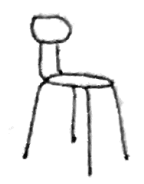
2002 Enzo Mari Magis, Italy steel in epoxy resin, polypropylene
Kitchen chairs probably started looking like this around the end of the 1940s. With this one Enzo Mari has precisely summarized the whole typology, tidying up all the unresolved issues both visually and technically. There need never be another kitchen stool, although there probably will be. Super Normal can represent a kind of end game in design, beyond which point things can only go downhill. It's a bit like the racing bicycle which could be considered to have reached its peak around 1985, after which the improvements may have performance benefits but the object itself suffers an identity crisis.
12. Ashtray
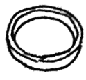
Noritake, Japan melamine
There are no grooves to hold cigarettes in this ashtray, which has been fashioned from heat resistant hard resin. It looks like nothing but an ashtray, even though the details that define an ashtray are not there. Things like the sense of volume expressed by the plastic and the lackadaisical vividness of the red color create the "ashtray" feel of this.
13. "Uni-tray"
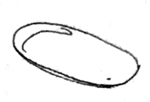
1976 1999 Riki Watanabe Sato Shoji stainless steel
This tray, one of Riki Watanabe's representative works, is most often used next to a cash register as something on which to place a customer's change. The surface of the tray is gently curved towards the edges, making it easy to grasp coins with four fingers. Some people use it as a pen tray; others use it to keep their accessories and other bits and pieces on. This versatility means that there is a great deal of freedom attached to its use, and this extended use makes it Super Normal.
14. "Canary" sandals
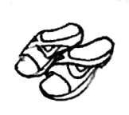
Nishibe Chemical, Japan
This is a "fake" sandal formed from a single molded piece of rubber; the pattern has been taken from a standard, upscale leather women's sandal. Japanese people, who do not wear their shoes in the home and who don't want to go to the trouble of putting shoes on when they're stepping outside for just a short time, wear this kind of sandal. They are often used in public toilets, too. The most common color is a light brown, really an unappealing color, but these are green-perhaps an attempt to be a little more fashionable? These copies of fashionable sandals are as unfashionable as can be but there is no sandal more sandal-like than this. And they're water resistant and easy to wear. When I saw professional surfers in Okinawa and people working at the beach wearing the green ones, they strangely fit in with their deeply tanned bodies and looked really good-like local pros, rather than surfers wearing flip flops just to look good.
15. Goose egg
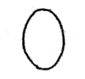
The goose egg illustrates a Super Normal device very nicely, namely, by shifting the conventional scale or proportion of objects, they acquire Super Normal properties. Seeing the goose egg we are not surprised by the form at all, but the scale of it warps our perception momentarily, allowing us to see something normal in a new way. There's nothing wrong with the form of a chicken egg except that we are used to seeing it, but seeing the goose egg we can enjoy the form as if seeing it for the first time.
16. Calculator
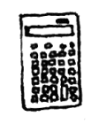
2004 Muji, Japan aluminum
The same shift of scale works for this calculator, the design of which was based on a normal pocket type model, scaled up to make it a desk model. The increased size of it makes it comfortable to use, and we perceive it with amusement as its size momentarily gives us the feeling that the world just got bigger.
17. Ashtray
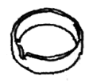
2003 Muji, Japan porcelain
At first glance, just a normal ashtray, but having only one slot for the cigarette, it becomes an ashtray for one, or an ashtray with a new dynamic in use. One person gets to use the slot and others don't. You might say that's a functional deficiency, but it could make for a more interesting and lively experience. Imagine three people smoking, one of them subconsciously satisfied with the situation and two uncomfortable about something but not sure what.
18. Bottle opener "Stavros"
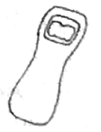
1999 Marc Newson Alessi, Italy stainless steel, plastic
The old bottle opener we are familiar with is here wrapped in a plastic molding, exposed at the functional end and comfortable at the holding end. We perceive the old bottle opener subconsciously and yet we appreciate the newness of the object. It is both comfortingly normal and surprisingly unexpected.
19. Stools "Deja-vu"
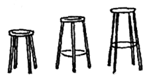
2005 Naoto Fukasawa Magis Italy aluminum
Like the bottle opener on the previous page these stools are both old and new. The typology is one we are well used to, nothing spectacular but satisfying all the same, but switching the materials allows us to appreciate the object in a new light, and suppressing its formal aspects allows us to appreciate it for what it is.
20. Cocktail shaker 870
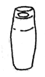
1957 Carlo Mazzeri/Luigi Massoni Alessi, Italy stainless steel
The basic form of the shaker is in keeping with the language of most cocktail shakers, but the addition of two dents, which help both to keep a grip on it while shaking and to facilitate its opening, distinguish it as Super Normal.
21. Sieve
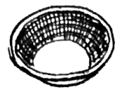
Ikeda Plastic Sales, Japan polypropylene
Originally, a sieve made of fine woven strips of bamboo was used to drain water off cut vegetables or rinse boiled noodles in cold water, but plastic, which is more functional in terms of deterioration and rough handling, is now the standard. Bamboo sieves are very attractive and go well with the foodstuffs that are washed in them, but strangely the ugly imitation coupled with the foodstuffs has come to look tasty. The mouthwatering atmosphere exuded by a shabby shop whose strength lies in the flavor of its food is conjured by this new standard sieve.
22. Ice bucket 871
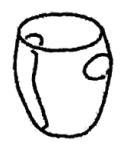
1957 Carlo Mazzeri/Luigi Massoni Alessi, Italy stainless steel
The ice bucket belongs to the same family as the cocktail shaker; the family resemblance lies in the gentle tapering of the shape and in the repeat of the two dents, which in this case serve as handles when lifting what would otherwise be a heavy and slippery object.
23. Fiber-tipped pen
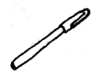
Pentel, Japan recyled polypropylene, recycled polyethylene
The most popular fiber-tipped pen, unchanging over time. A cross-section shows a gentle hexagonal shape. The thickness of the pen feels good in the hand, and it is easy to write with. Of all the pens randomly tossed into a drawer, this is the one that we inevitably reach for. Usually black or red, but every now and then you may come across grey, green and orange ones, too. For an old standard item with a shape people have a soft spot for, these colors are very fresh and appear to surpass normal.
24. Package-carrier handle
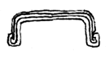
Japan polypropylene
This simple handle is passed through the strings wrapped around a heavy cardboard box to prevent the string from cutting into the carrier's hand. When considering how to create a handle that's the easiest to grasp while minimizing production costs and using the least amount of material possible, any thoughts or ambitions with respect to design vanish into thin air. One focuses only on the functionality that will satisfy these difficult conditions. The result is an anonymous shape, the ultimate in minimal, that has come to be called normal.
25. Wastebin "Trash"
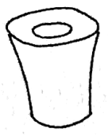
2005 Jasper Morrison Magis, Italy polypropylene
The tapering shape expresses an enthusiasm to receive trash, like most waste bins do. In this case, though, the addition of a lid with a hole goes a step further by offering to keep its contents hidden. A ring inside discreetly supports the plastic bag.
26. Table "Less"
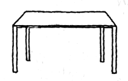
1994 Jean Nouvel Unifor, Italy steel
A table, looking like what anyone might draw-four legs, one at each corner, straight and square and nothing unexpected except the thinness of the top, which defies our expectations of what would be strong enough to do the job. So the table becomes a live presence in a way that other tables do not. A high performance super-table.
27. Coat stand "Hut ab"
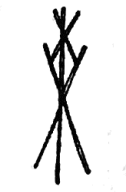
1998 Konstantin Grcic Nils Holger Moormann, Germany ash
Delivered in a tube, this miraculous structure is erected in seconds, braced by its extra level that provides 3 extra hanging points at its ends and 3 hooks where it meets the lower structure. The unfolding of the elements creates a light but stable structure with such ease of purpose and elegance that to see it is to appreciate the character of a good coat stand. Super without trying to be special.
28. Sake glass
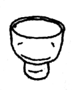
1976 Sori Yangi Toyo Sasaki Glass, Japan glass
The summary of all Sake glasses, the cup-shaped cup held off the table by a weighted base-shaped base, both made for each other. The shape comes from a classic Japanese ceramic or lacquerware bowl typology, while the deformation and change of material make for the most natural vessel imaginable for the precious liquid.
29. "G type" soy sauce dispenser
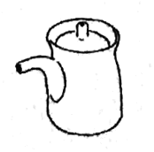
1958 Masahiro Mori Hakusan Porcelain, Japan porcelain
This soy sauce dispenser designed by Masahiro Mori has such an iconic presence that it automatically comes to mind when we think of soy sauce. In fact, its presence even overlaps with, say, the presence of a good sushi shop. Going to a good sushi shop and finding a different soy sauce dispenser would perhaps make you feel like something just wasn't right. "Normal" is something that is created through the existence of an object interlaced with the overall atmosphere that surrounds it.
30. Table salt shaker
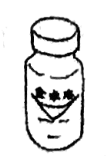
The Salt Industry Center of Japan glass, polypropylene, and polyethylene
In days gone by, the general store on the street corner was called a tobacco shop, and salt was always sold there along with cigarettes. This table salt shaker is one that seems to hark back to that time. Since then, salt has been revamped, with a new bottle making the scene. But when you get down to it, this stable conical shape is still an icon for table salt. Many shakers, whether by coincidence or not, have the same kind of shape. What they share is that, while having a functional shape, they also have a gentleness, a softness about them.
31. Pepper mill 76
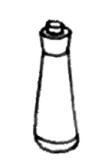
1965 Carlo Mazzeri/Anselmo Vitale Alessi, Italy stainless steel
Hard to imagine a more perfect industrial object, or a better pepper mill, the perfect blend of industrial technique, refined function and charming companion at the table.
32. Sugar sifter 70
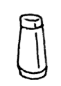
1962 Carlo Mazzeri/Anselmo Vitale Alessi, Italy stainless steel
The sugar sifter must have been a natural next step after the pepper mill, making use of the same black plastic base to close the open-ended conical body.
33. Paper clip
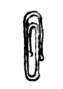
Norica, Germany
Tiny balls added to the ends of what is otherwise a normal paper clip make the difference between scratched and not scratched pages when applying the clip. They also change the whole experience of clipping paper together, being much easier on the fingers and having a certain extra quality about them.
34. Digital camera
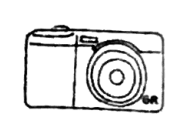
2005 Masahiro Kurita/Tatsuo Okuda Ricoh, Japan diecast magnesium
The relatively large handle section makes it easy to operate the camera with one hand. It is a compact camera that originally took film and has now been digitalized without changing the traditional style at all. Equipped with an interchangeable lens function, high image quality, and high pixel count, it easily competes with the functions of a professional single-lens reflex camera. The combination of unchanging normal shape and super-enhanced performance makes this camera Super Normal.
35. Cutter
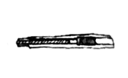
NT Cutter, Japan ABS plastic, polyoxymethylene
The generic name for the type of knife where one pushes up the blade to snap off the end that has become dull, stems from this NT cutter. Ivory plastic covers the outside of the metal guide that encases the blade. Despite its slim line, the cutter is shaped to allow an easy grip. When searching for things that were Super Normal, this was not the cutter that sprang to mind, but rather the slimmest, simplest form where the protective plastic part was removed to reveal the metal guide. And when I went to a stationery shop to buy it, I realized that the NT cutter lying next to it, which had been around for years, was Super Normal. It is still the easiest to use and appears to be something people have a soft spot for. It was not nostalgia I felt but rather the feeling that I was looking at the essence of a cutter.
36. Tea cup
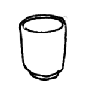
2004 Muji,Japan porcelain
Part of a set of tableware recently designed by the late Masahiro Mori for Muji. The exterior is smooth white porcelain, while the interior makes use of a very slight radial ridging that appears like a textured pattern when glazed. The ridging is so slight that the texture can be seen more than felt, and the contrast between outside and inside surfaces adds a certain richness to what might otherwise be an ordinary tea cup. Porcelain is cheap these days but it should be remembered that it was once more valued than gold, and it remains a remarkable and unrivalled material for tableware.
37. Ice cream spoon
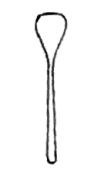
2000 Sori Yanagi Sato Shoji, Japan stainless steel
A masterpiece of manipulation of a thin sheet of stainless steel. The curves are so subtle and so carefully considered for the hand and the eye that the spoon appears to have volume. Sori Yanagi's attention to detail in this case results in the seemingly impossible conjuring trick of making the 2-dimensional seem 3-dimensional.
38. Thermometer
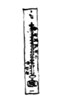
Empex Instruments, Japan wood,glass
A glass rod fixed to a wooden board with clear-cut numbers: a visual image of that elusive thing called "temperature." Even the introduction of digital devices cannot detract from the fact that this thermometer attached to a wooden mount is an icon.
39. Flour scoop
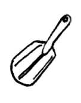
stainless steel
A process similar to the ice cream spoon, but more complicated, is used to make this scoop. The manipulating of a flat sheet of stainless steel in this case results in a far less subtle and yet undeniably effective shape. The scoop has all the characteristics to qualify it as 100% adequate for its purpose. The rounded ends allowing easy access to the bag, and the angle between handle and blade is just right for the job. The object is so relaxed and natural in appearance that it overcomes its own ordinariness.
40. Bowl and Sieve
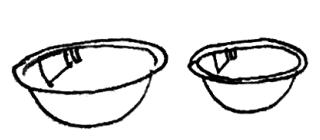
stainless steel
A traditional idea revisited and perfected by Sori Yanagi. The sieve fits inside the bowl, its rim slightly overlapping the rim of the bowl for easy lifting and straining of vegetables or noodles or whatever else needs rinsing and straining. When Yanagi visited the Tokyo exhibition he commented on several exhibits. "This is beautiful", "What's that for?" and so on, and when he came to these bowls, he asked admiringly "Who designed these?" That is surely the greatest testament to his ability to design things so natural that they become one with the world of objects rather than remaining aloof as design masterpieces.
41. Vermilion calligraphy ink
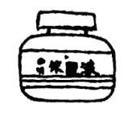
Kaimei, japan polyethylene
With 42. "Yamato" library paste bottle: School supplies. one container holds the red ink used in calligraphy; the other holds glue. The contents are completely different, but they are both poured into blow-molded soft PP containers. The containers have a gentleness, a softness not found in similar items for professional use. When the user is a child, when it is an educational material, or when it is for beginners, the shape of an object is gentle and easy to understand. Since everyone uses the same thing at school, it becomes something normal to everyone.
42. "Yamato" library paste bottle
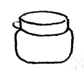
Yamato, Japan polyethylene
With 41. Vermilion calligraphy ink: School supplies. one container holds the red ink used in calligraphy; the other holds glue. The contents are completely different, but they are both poured into blow-molded soft PP containers. The containers have a gentleness, a softness not found in similar items for professional use. When the user is a child, when it is an educational material, or when it is for beginners, the shape of an object is gentle and easy to understand. Since everyone uses the same thing at school, it becomes something normal to everyone.
43. Salt castor/Spice holder
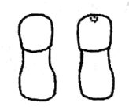
2002 Marc Newson Alessi, Italy crystal glass, stainless steel
Well within the everyday language of these types of object and yet generously over-proportioned for the job, they become the professional choice for the kitchen.
44. Bar sugar bowl
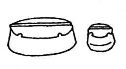
1961/1964 Carlo Mazzer/Anselmo Vitale Alessi, Italy stainless steel
Like the citrus basket, this sugar bowl can be found on almost every bar in Italy and represents the highest level of sophistication in design. It makes use of a basic material (stainless steel) and the available industrial processes to give shape to an object that serves its purpose perfectly in every way. It's easy and interesting to use, the cut-aways allow two spoons to be positioned for comfortable access, while the rim of the lid folds outwards at the front to provide an easy lifting point. Normally, incorporating all of these features in one material might easily lead to an unshapely and awkward result but here everything works together and the result is as graceful as a sugar bowl could ever hope to be.
45. Grill pan
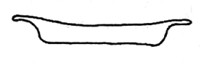
2002 Sori Yanagi Sato Shoji, Japan cast iron
Another Sori Yanagi design which refines a traditional kitchen item by finding beautiful and natural form to match its function. Yanagi's method involves a lot of hand modeling before the final shape is defined on paper, while we all use computers and 3-d drawing programs. Looking at an object like this one reminds us of what we may be sacrificing in the name of efficiency.
46. Milkbottle
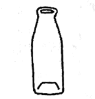
1965 TOYO Glass, Japan glass
Milk used to be delivered to the doorstep early in the morning. Like newspapers. The shape of this milk bottle hasn't changed since then. The bottles are used over and over again so the glass is thick to keep them from breaking easily. The delicious flavor of milk overlaps with the shape of this bottle. It is a friendly shape with no feel of precision to it and the most normal shape for milk.
47. Tumbler
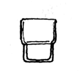
Toyo Sasaki Glass, Japan tempered glass
Cafés, soba shops, and casual restaurants use glasses that can be stacked. These tumblers are especially for drinking water or iced tea and almost nobody uses them at home. They came to mind when I was thinking about the definition of Super Normal. What would you think, for example, if you were invited to a friend's house and were served iced tea or water in one of these glasses? You'd probably wonder why your friend was using them because it's perhaps more normal to give a guest in your home a glass that is a little better in terms of design. The circum- stances under which water is drunk from this glass are fixed. Having quickly finished your meal at, say, a soba shop where you eat standing up, you drain the glass in one gulp. This is probably a shared feeling of the most refreshing way to drink water. When this ordinary feeling finds its way into the home, it seems strange. But perhaps your friend wanted especially to offer you this normal "refreshing-way-to-drink-water" feeling. Perhaps there is a more generous serving of love in this normal feeling than if you had been served something in a glass chosen for its design. The appeal of Super Normal lies in the idea that our relationship with things we aren't usually aware of is richer than with things that are viewed in terms of design.
48. Wineglass
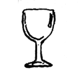
glass
A simple stemmed wineglass, probably around 100 years old, probably made for a French bar. It's the absolute opposite of all the special ones on the market today, wine glasses that want us to believe they are essential for enjoying specific types of wine. They're the kind of glasses that spoil the atmosphere of a dinner table faster than a bowl of foul tasting soup! A basic form like this one, with its unassuming nature, has all the character to make almost any wine taste good, and even with the last drop emptied, it still continues to give good atmosphere to the table.
49. Door handle
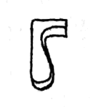
1990 Jasper Morrison FSB, Germany cast aluminum
The shape of this door handle is taken from an old coach handle, the type of coach pulled by horses before cars became the norm. The form of the original handle had a character about it that seemed to be the essence of all handles, a kind of distillation of what you'd expect a handle to look like.
50. Vegetable peeler
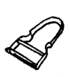
1947 Alfred Neweczersal Zena, Switzerland aluminum, stainless steel
A classic example of achieving the most with the least. Nothing showy about this implement, but once held in the hand and tested on a potato or a carrot, there's no mistaking its efficiency or the beauty of thought behind it.
51. Spanners
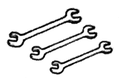
MBPerraud outillage, France Chromed forged steel
These forged spanners make no claim to be anything but adequate for their purpose, and yet in the directness of the detailing and the peculiar poetry of their formal composition, they succeed in surpassing their ordinary status.
52. Felt undershoes
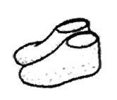
Germany felt
This item of footwear is made to be worn inside rubber boots as an insulating sock, but seen out of their boots they seem to represent the history of all footwear. They are more like the essence of Super Normalness than an actual Super Normal object. Given how flat felt sheet behaves, they seem to defy the possibility of their own manufacture.